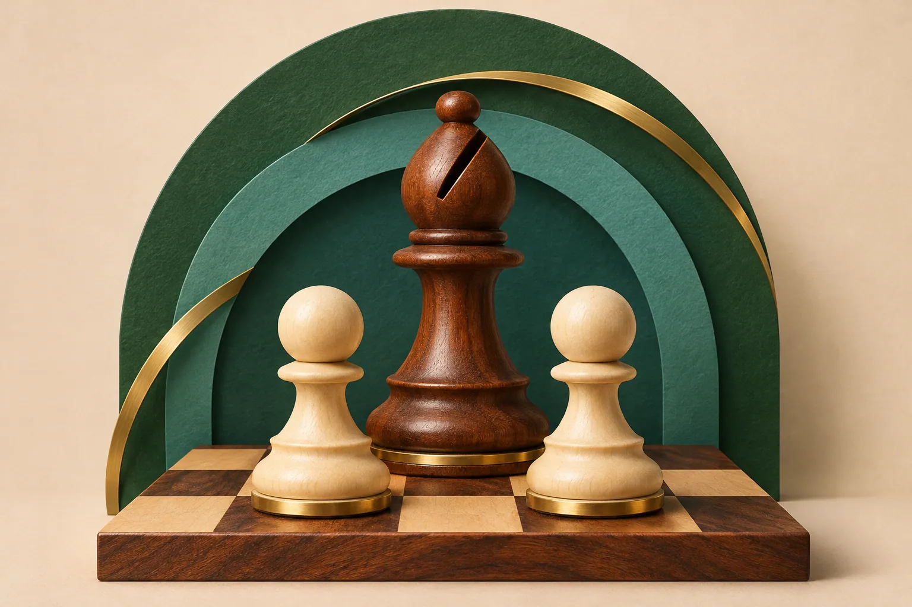
La Caro-Kann commence par 1. e4 c6, souvent suivi de 2. d4 d5. Les Noirs préparent la poussée …d5 avec leur pion c6. Le fou c8 conserve une possibilité de sortie avant …e6. Le centre obtenu dépend ensuite du choix des Blancs : avancer, échanger ou défendre.
- Avec les Noirs
- 1. e4 c6 2. d4 d5
- Repère ECO : B12
Vous jouez les Noirs contre 1. e4 et cherchez une idée facile à formuler : préparer …d5 et discuter le centre. La Caro-Kann permet d’observer le rôle d’un pion de soutien, puis la question pratique du fou de cases blanches.
Elle peut vous convenir si vous aimez organiser vos pions avant de choisir les échanges. Elle reste une réponse à 1. e4 : les mêmes premiers coups n’ont pas automatiquement le même sens contre 1. d4.
À retenir avant de jouer
- Votre objectif
- Soutenir …d5 par …c6 et développer le fou c8 avant de fermer sa diagonale lorsque c’est possible.
- La décision au centre
- Comparer l’avance e5 à l’échange en d5 : ces choix demandent des placements différents.
- Le point de vigilance
- Une dame blanche en e2 peut clouer le pion e7 et rendre possible un mat en d6.
Dans ce guideChoisissez votre point de départ
Sur l’échiquier
Les premiers coups, un à un
Dans la notation française, C = cavalier, F = fou, D = dame et O-O = petit roque. T = tour et R = roi. Le signe x indique une capture, + un échec et # un mat. Les points de suspension indiquent un coup des Noirs.
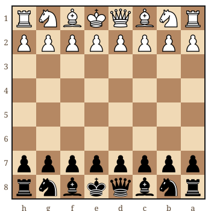
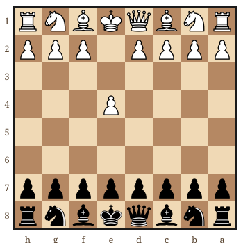
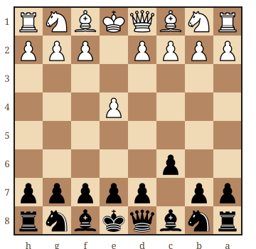
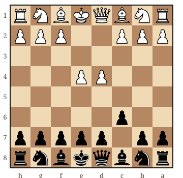
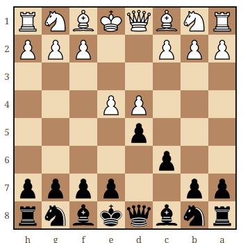
Ce que chaque coup accomplit
- 1. e4
Les Blancs installent un pion en e4.
- 1…c6
Le pion c6 prépare …d5 en contrôlant cette case.
- 2. d4
Les Blancs occupent aussi d4 et disposent d’un centre de deux pions.
- 2…d5
Les Noirs attaquent e4 avec leur pion d5, soutenu par c6.
Votre fil conducteur
Trois idées à garder en tête
Contester le centre sans se précipiter
Le coup …c6 prend du temps mais prépare …d5. Une fois le centre atteint, regardez si les Blancs avancent leur pion ou échangent.
Donner une place au fou c8
Avant …e6, sa diagonale reste ouverte. Dans certaines structures, …Ff5 le développe hors de la chaîne de pions ; il faudra ensuite surveiller les attaques sur ce fou.
Développer malgré le pion c6
Le pion en c6 occupe une case habituelle du cavalier b8. Pensez à son développement ultérieur au lieu d’attendre que toutes les cases se libèrent seules.
Un exemple court pour comprendre le plan
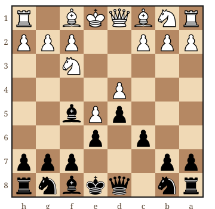
Les Blancs ferment le centre par e5. Dans cette illustration, les Noirs sortent leur fou en f5 avant de jouer …e6. Le fou n’est donc pas enfermé derrière le pion e. Il reste à développer les cavaliers et à surveiller l’espace pris par les Blancs.
Deux choix des Blancs à reconnaître
3. e5 : L’avance
Les Blancs gagnent de l’espace et ferment le contact entre les pions e4 et d5. Le développement du fou c8 devient une décision importante.
3. exd5 : L’échange
Les Blancs prennent en d5. La reprise …cxd5 utilise le pion de soutien c6 ; la structure obtenue diffère de la variante d’avance.
Ce sont des repères pour vous orienter. Vous n’avez pas besoin de mémoriser leurs ramifications pour commencer à jouer.
Comprendre ce qui se joue
Lire le centre et la structure de pions
Le duo de pions c6–d5 est construit pour que le pion c soutienne d5. Si les Blancs prennent en d5, …cxd5 remplace le pion capturé au centre. Si les Blancs avancent e5, les pions d4 et e5 gagnent de l’espace et le contact central se ferme autrement. La même ouverture mène donc à des positions dont les besoins ne sont pas identiques.
Dans la variante d’avance étudiée, le fou c8 sort en f5 avant …e6. Il échappe ainsi à l’enfermement derrière le pion e. Mais il devient aussi une pièce accessible aux pions blancs : g4 peut l’attaquer, et une retraite doit être anticipée. Le développement du fou résout un problème de mobilité sans rendre la pièce intouchable.
Le pion c6 prend une case souvent utilisée par le cavalier b8. Ce cavalier devra parfois passer par d7, ou bénéficier plus tard d’un changement de structure. Quant au cavalier g8, le pion blanc e5 contrôle f6 : la case habituelle f6 n’est donc pas libre de conséquences dans la structure d’avance. C’est un exemple concret de la nécessité de regarder les pions adverses avant d’appliquer les cases de développement habituelles.
Quelles cases chercher pour vos pièces ?
Ces placements sont des repères à vérifier dans la position, pas des coups à jouer sans regarder l’adversaire.
- Fou c8f5 dans l’exemple avec e5
- Le sortir avant …e6 conserve une diagonale active. Prévoyez ce qu’il fera si g4 l’attaque.
- Cavalier b8d7 dans certaines structures avec c6
- Le pion c6 bloque Cc6. Une case de développement doit aussi laisser du travail aux autres pièces.
- Cavalier g8une route adaptée au pion e5
- Dans la structure d’avance, f6 est contrôlée par e5. Des développements par e7 ou h6 peuvent exister, selon la position et les pièces qui occupent ces cases.
- Fou f8une diagonale ouverte après …e6
- Le pion e6 peut aider ce fou à sortir. Sa case dépend de la défense du roi et des pions blancs.
- Pions c et dsoutien puis transformation du centre
- Après un échange en d5, le pion c peut occuper d5. Ne continuez pas à raisonner comme si c6 était encore occupée.
Comment réagir aux idées adverses
Si les Blancs avancent e5
Ils gagnent de l’espace et contrôlent notamment f6. Sortir le fou c8 avant …e6 est une idée importante, mais le développement des cavaliers doit ensuite être adapté. Ne posez pas mécaniquement un cavalier en f6 sur une case attaquée par un pion.
Si les Blancs échangent en d5
Après exd5 et …cxd5, la case c6 se libère et le pion noir arrivé en d5 remplace le pion d initial. Les trajets des pièces et les possibilités du pion c blanc peuvent changer la structure. Relisez la position au lieu de poursuivre le plan de la variante d’avance.
Si le fou f5 est attaqué par g4
La menace vient d’un pion : le fou ne peut pas l’ignorer. Une retraite comme …Fg6 peut être disponible, mais il faut déjà examiner les poussées h4 et h5 possibles ensuite. Un coup qui sauve une pièce maintenant ne termine pas forcément sa question de sécurité.
Une décision concrète
Le fou est sorti : il faut encore le garder en sécurité
Les Noirs ont joué …Ff5 puis …e6 dans la variante d’avance. Les Blancs ont développé Cc3 et viennent d’avancer g4. Le pion g4 attaque le fou f5. Le cavalier g1 n’a pas bougé : la diagonale d1–e2–f3–g4 est libre et la dame blanche défend g4.
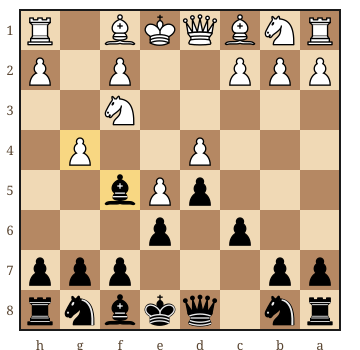
Quelle retraite peut sortir le fou de l’attaque immédiate du pion g4 ?
Repérez d’abord les menaces et les cases contrôlées, puis proposez une réponse.
Lire l’analyse de la position
5…Fg6 retire le fou de l’attaque du pion g4, qui contrôle f5 et h5. Prendre le pion par 5…Fxg4 ne résout pas le problème : 6. Dxg4 gagne le fou contre un pion. C’est précisément l’absence de cavalier blanc en f3 qui permet cette reprise de dame. Après …Fg6, les Noirs devront encore surveiller une éventuelle avancée h4 puis h5 : la retraite répond à la menace immédiate, pas à toutes les menaces futures.
Comparer pour comprendre
Avance ou échange : pourquoi le plan des pièces doit changer
Après e4, …c6, d4 et …d5, les Blancs choisissent ce qu’ils veulent faire du contact entre les pions. Avancer e5 garde davantage de pions au centre et gagne de l’espace. Échanger en d5 enlève deux pions de leurs trajets initiaux et oblige les Noirs à reprendre.
Ces choix ont un effet direct sur les cavaliers et les fous. Dans la structure d’avance, le pion e5 contrôle f6. Après l’échange, ce pion n’existe plus. De même, le pion noir c6 peut rester en c6 ou se retrouver en d5. Une fiche utile doit donc enseigner la différence entre les structures, plutôt qu’un placement unique des pièces.
Position commune de départ :
1. e4 c6 2. d4 d5
Rejouez cette position, puis comparez les suites ci-dessous. Ce sont des exemples commentés : elles ne constituent pas deux recommandations équivalentes ni des coups à reproduire sans calculer.
e5 : espace blanc et contrainte sur f6
3. e5
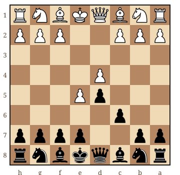
3. e5 avance le pion blanc et ferme le contact immédiat avec le pion d5. Le pion blanc contrôle d6 et f6. Les Noirs ne peuvent donc pas installer mécaniquement leur cavalier g8 en f6 sans examiner la capture exf6.
Le fou c8 conserve encore sa diagonale de sortie : le pion e7 n’a pas avancé. Le développement de ce fou avant …e6 est une idée de la Caro-Kann, mais il faudra ensuite prévoir les attaques de pions contre sa nouvelle case. Le centre fermé n’annule pas les problèmes tactiques.
L’échange puis c4 : contester le nouveau pion d5
3. exd5 cxd5 4. c4
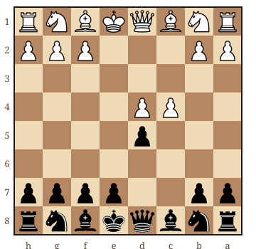
Après 3. exd5 cxd5, le pion noir c6 a repris en d5. Les Blancs peuvent jouer 4. c4 pour attaquer ce pion avec leur pion c. La case c6 est désormais libre et le pion blanc e a disparu : les conditions de développement ne sont plus celles de la branche d’avance.
L’équilibre matériel est conservé. Mais les Blancs disposent de pions d4 et c4 qui contestent le centre, tandis que les Noirs doivent coordonner leurs pièces autour de d5. Ces deux pions blancs sont côte à côte : ils ne se soutiennent pas mutuellement. La présence de c4 ouvre une question de structure à étudier, pas un gain de pion automatique.
Vérifiez votre compréhension
Après exd5 et …cxd5, quel pion noir se trouve en d5 ?
Le pion venu de c7, passé par c6. Le pion d noir a été capturé en d5.
Pourquoi le cavalier b8 n’a-t-il pas les mêmes contraintes dans les deux branches ?
Dans la branche d’avance, c6 reste occupée par le pion noir. Après …cxd5, cette case est libre ; le développement doit être réévalué.
Le coup c4 prend-il le pion d5 ?
Non. Il l’attaque. Il faudra ensuite regarder les soutiens, les captures et les reprises possibles pour les deux camps.
À appliquer dans vos parties : Après chaque choix blanc au troisième coup, nommez les pions qui ont disparu ou changé de colonne. Choisissez ensuite les cases de vos cavaliers à partir de cette position, plutôt qu’à partir d’une image apprise dans une autre variante.
Reconnaître les embranchements
Deux variantes à comprendre pour commencer
Ces lignes courtes montrent ce qui change dans le centre et le développement. Rejouez les coups, puis formulez le plan avec vos propres mots ; les réponses adverses peuvent vous amener à une autre position.
L’avance : sortir le fou avant …e6
1. e4 c6 2. d4 d5 3. e5 Ff5 4. Cf3 e6
Les Blancs ferment le centre par e5. Les Noirs sortent leur fou c8 en f5 avant de fermer la diagonale avec …e6. C’est une différence de développement importante avec certaines positions de la Française.
Le plan à comprendre : Le fou f5 reste une cible possible pour les pions blancs. Surveillez les avances g4 et h4, et gardez une case de retrait disponible. Ensuite, la pression sur d4 peut se préparer par …c5 : les pièces doivent accompagner cette rupture.
La classique : développer le fou en attaquant le cavalier
1. e4 c6 2. d4 d5 3. Cc3 dxe4 4. Cxe4 Ff5 5. Cg3 Fg6
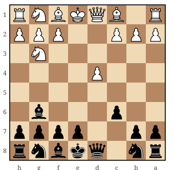
Après l’échange en e4, le cavalier blanc reprend et le fou f5 l’attaque. Les Blancs le déplacent en g3, d’où il touche f5 ; le fou noir recule en g6. Chaque camp a utilisé son développement pour poser une question à une pièce adverse.
Le plan à comprendre : Ne retenez pas seulement les cases finales. La suite fonctionne parce que chaque déplacement répond à une attaque réelle. Les Noirs doivent ensuite développer leurs cavaliers et préparer le roi ; le fou g6 peut encore être visé par une avance de pion.
Calculer avant de jouer
Piège et vigilance : Le mat en d6 derrière un pion cloué
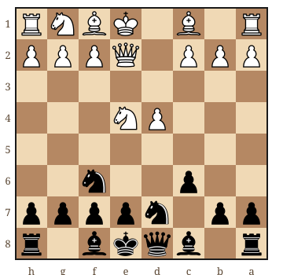
1. e4 c6 2. d4 d5 3. Cc3 dxe4 4. Cxe4 Cd7 5. De2 Cgf6
Avant de lire la suite, repérez les échecs, les captures et les pièces attaquées.
Voir la suite et le mécanisme
6. Cd6#
Le cavalier e4 saute en d6 et donne mat. Le pion e7 semble pouvoir le prendre, mais son départ ouvrirait la colonne e entre la dame e2 et le roi e8 : cette capture est illégale. Les propres pièces noires occupent les autres cases de fuite du roi. C’est un exemple de mat où un défenseur apparent ne peut pas intervenir.
Comment éviter le problème ou y répondre
Après 5. De2, 5…e6 évite cette configuration : le pion e a déjà quitté e7 et le roi obtient notamment la case e7 si un cavalier donne échec en d6. Ne développez pas mécaniquement …Cgf6 sans regarder la dame sur la colonne du roi.
Suite de référence à rejouer depuis le début :
1. e4 c6 2. d4 d5 3. Cc3 dxe4 4. Cxe4 Cd7 5. De2 e6
Passer de l’ouverture au milieu de partie
À la fin du développement, les Noirs cherchent généralement à améliorer leurs pièces et à contester les pions avancés, sans se laisser enfermer. Une rupture comme …c5 peut devenir un projet dans certaines positions, mais le pion a déjà joué …c6 : il faudra juger le coût en temps et les captures possibles. Ce n’est pas un coup à pousser par habitude.
À l’analyse, comparez la position de vos deux cavaliers et celle du fou c8. Si vous avez gardé un centre de pions intact mais laissé deux pièces inactives, votre prochain objectif est de leur trouver un rôle, pas d’ajouter un nouveau coup de soutien.
Le nom et ses origines
D’où vient le nom « défense caro-kann » ?
Le nom réunit Horatio Caro et Marcus Kann. L’étude historique du grand maître Bryan Smith distingue les analyses publiées par Caro en 1886 et l’association de Kann à cette défense, notamment par sa victoire contre Mieses en 1885.
Ces noms ne signifient pas que les deux joueurs auraient inventé ensemble la défense à une date précise. Des parties antérieures existent, et le nom composé s’est fixé progressivement.
Pour comprendre le nom, il faut distinguer les travaux publiés de Caro et la pratique de Kann. Les présenter comme coauteurs d’une même invention simplifierait excessivement cette histoire.
Les erreurs à éviter dans cette ouverture
Jouer …e6 sans penser au fou
Ce coup peut être utile, mais il ferme la diagonale de c8. Sachez quel rôle vous prévoyez pour ce fou.
Croire qu’une structure solide ne demande aucun calcul
Votre fou sorti en f5 peut être attaqué. Une organisation cohérente de pions n’empêche pas les menaces tactiques.
Oublier le cavalier b8
La case c6 est occupée par un pion. Le cavalier aura besoin d’un autre trajet ou d’une évolution de la structure.
À vous de jouer
Un exercice pour vérifier l’idée
Quel coup développe le fou c8 hors de la chaîne avant …e6 ?
Prenez quelques secondes pour choisir et expliquer votre coup.
Voir la réponse expliquée
3…Ff5 : le fou passe par d7 et e6, puis rejoint f5. Les deux cases sont libres puisque le pion d a quitté d7 et le pion e n’a pas encore avancé. Le fou pourra ensuite être visé : sa sécurité reste à vérifier.
Votre prochaine séance de pratique
- Après …c6, vérifiez que ce pion contrôle d5.
- Dans la variante d’avance, sortez le fou c8 avant …e6 puis observez sa diagonale.
- Après exd5 et …cxd5, comparez la structure à celle où le pion blanc a avancé en e5.
Besoin de comprendre vos propres parties ? Les cours d’échecs permettent de travailler à partir de vos positions.
Quelles ouvertures comparer ensuite ?
- Défense française : comprendre e6, d5 et le centre
Comparer le rôle du fou c8 après …c6 ou …e6.
- Défense scandinave : comprendre 1…d5 et la sortie de dame
Comparer deux façons noires de contester e4 avec …d5.
Retrouver les onze ouvertures et choisir votre prochaine fiche.
Questions fréquentes
À quoi sert 1…c6 dans la Caro-Kann ?
Le pion c6 contrôle d5 et prépare l’installation du pion d en d5. Les Noirs contestent ainsi le centre blanc après 1. e4.
Qui sont Caro et Kann ?
Horatio Caro et Marcus Kann sont deux joueurs associés à l’analyse et à la pratique de cette défense au XIXe siècle. Leurs noms ne prouvent pas une invention commune en un seul événement.
Pourquoi parle-t-on autant du fou c8 ?
Contrairement à un début immédiat par …e6, …c6 ne ferme pas sa diagonale. Les Noirs peuvent, selon la position, le développer avant de construire leur chaîne de pions.